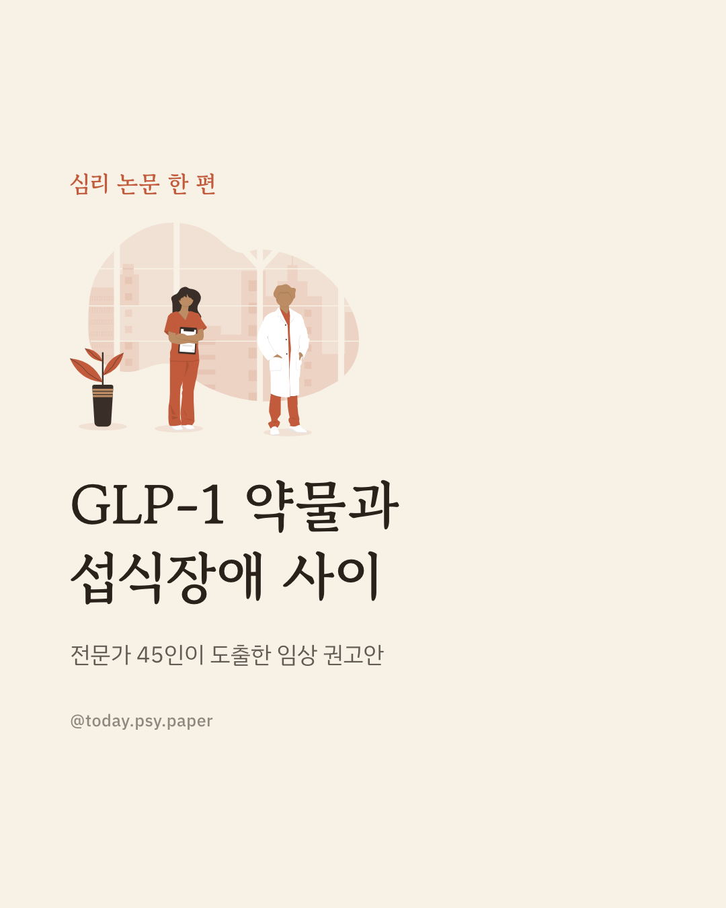
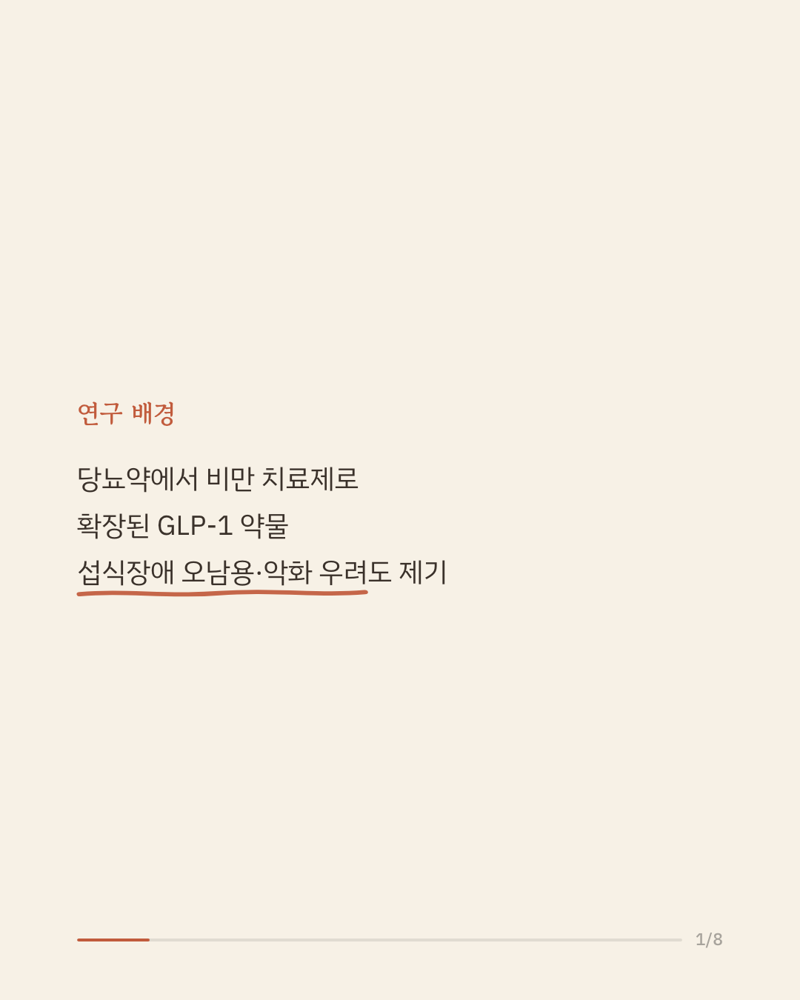
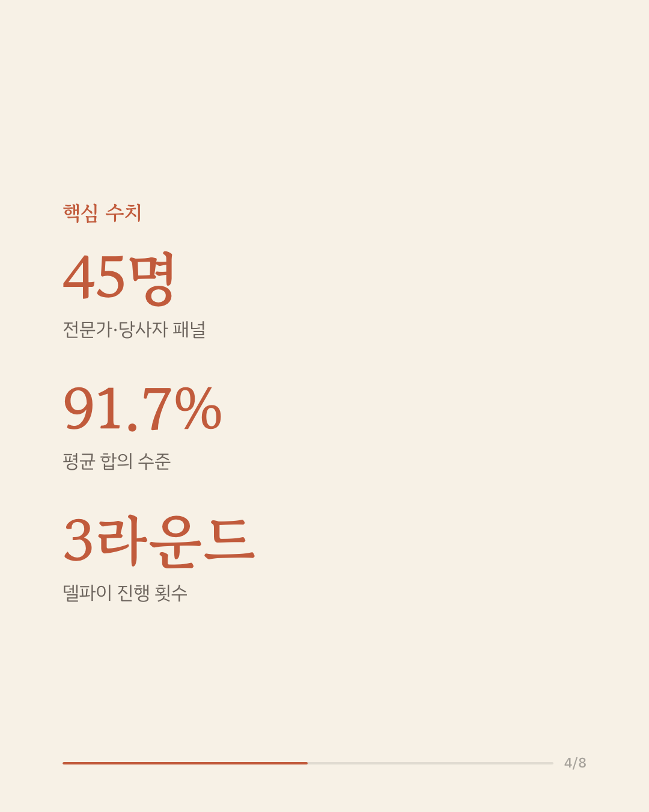
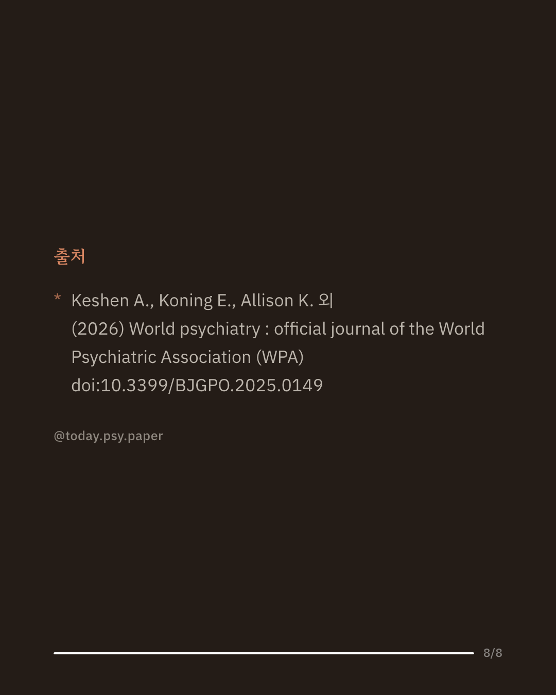

GLP-1 계열 약물은 원래 당뇨병 치료제로 개발되었다가, 강력한 식욕 억제와 체중 감소 효과 덕분에 비만 치료로도 널리 쓰이고 있습니다. 최근에는 폭식을 줄이는 효과까지 보고되면서 섭식장애 치료에 대한 기대도 생겼지만, 동시에 이 약이 섭식장애를 악화시키거나 새로 유발할 수 있다는 우려도 함께 제기되고 있습니다. 이에 국제 학술지 월드 사이키어트리에 실린 이번 연구는 당뇨·비만·섭식장애 전문가와 섭식장애 경험 당사자 45명을 모아, 3라운드에 걸친 델파이 방식으로 임상·연구 권고안에 대한 합의를 이끌어냈습니다. 그 결과 GLP-1 약물을 처방하기 전 섭식장애 병력을 검증된 도구로 선별하고, 복용 중에도 위험도에 따라 증상을 정기적으로 점검해야 한다는 데 높은 합의(평균 91.7%)가 이뤄졌습니다. 특히 거식증, 비전형 거식증, 뚜렷한 식이 제한이나 체중 감소를 동반한 폭식증 등 현재 섭식장애를 겪고 있는 경우에는 이 약을 일반적으로 피해야 하며, 과거 섭식장애 병력이 있다면 신중하게 접근해야 한다고 권고했습니다. 이번 권고안은 GLP-1 약물의 이점과 위험을 함께 저울질할 수 있는 근거 기반 진료 기준을 처음으로 제시했다는 점에서 의미가 있습니다. 다만 이는 전문가들의 의견을 모은 합의이며 실제 섭식장애 발생 위험을 추적한 데이터 자체는 아직 부족하므로, 단일 연구이므로 확대 해석은 조심해야 합니다. 출처: World Psychiatry (2026), 'Consensus-based clinical and research recommendations for use of glucagon-like peptide-1 receptor agonists in the context of eating disorders: a modified Delphi study' #임상심리 #정신건강정보 #섭식장애 #심리학연구 #비만치료제
python3 publish.py 42742590